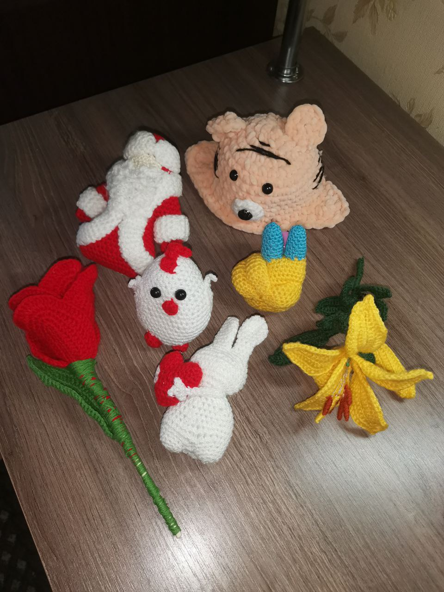
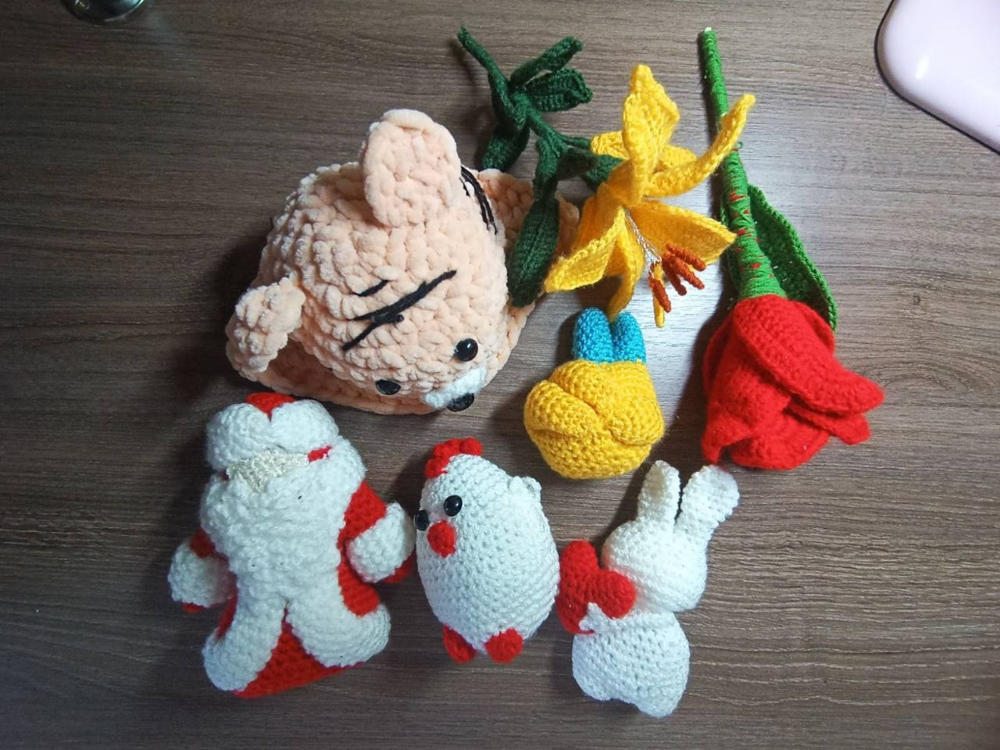

Моє хобі
Перша сторінка
В'язання гачком — процес створення текстилю, використовуючи гачок для в'язання, щоб з'єднати петлі пряжі, або ниток та інших матеріалів.
Гачки можуть бути виготовлені з різних матеріалів, таких як метал, дерево, бамбук або пластик.
Існує два способи в'язання: плоске і кругове.
У простому в'язанні крючком при плоскому в'язанні можливо створити переміщення вперед і назад.
У круговому в'язанні виробів в'яжеться або циліндрична форма
(без шва), або кругова.
Приклад в'язаних фруктів спицями та гачком, які я хочу створити:

Мої вироби виготовлені власноруч:

